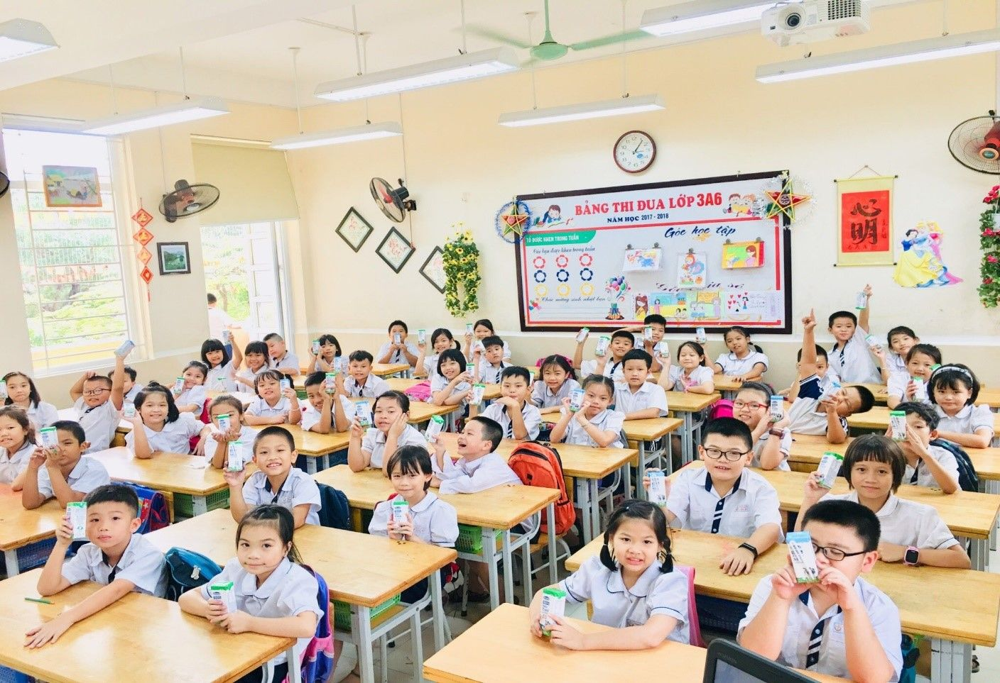
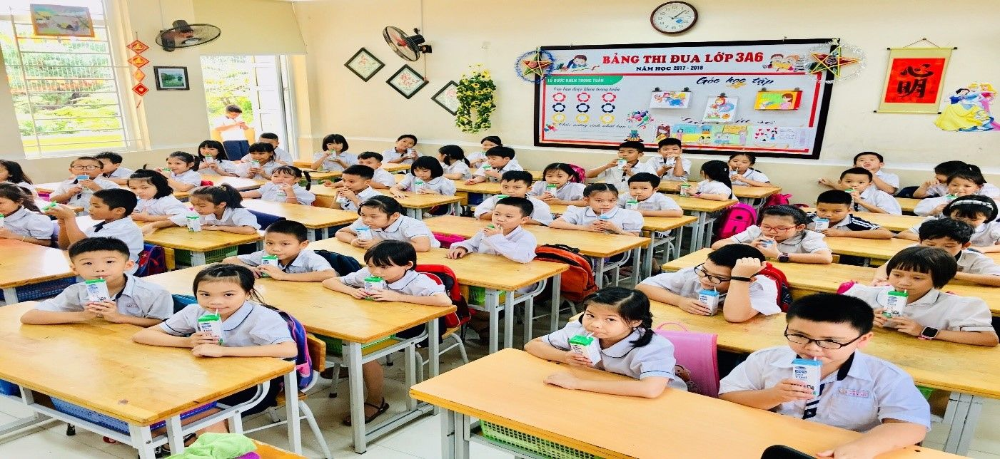
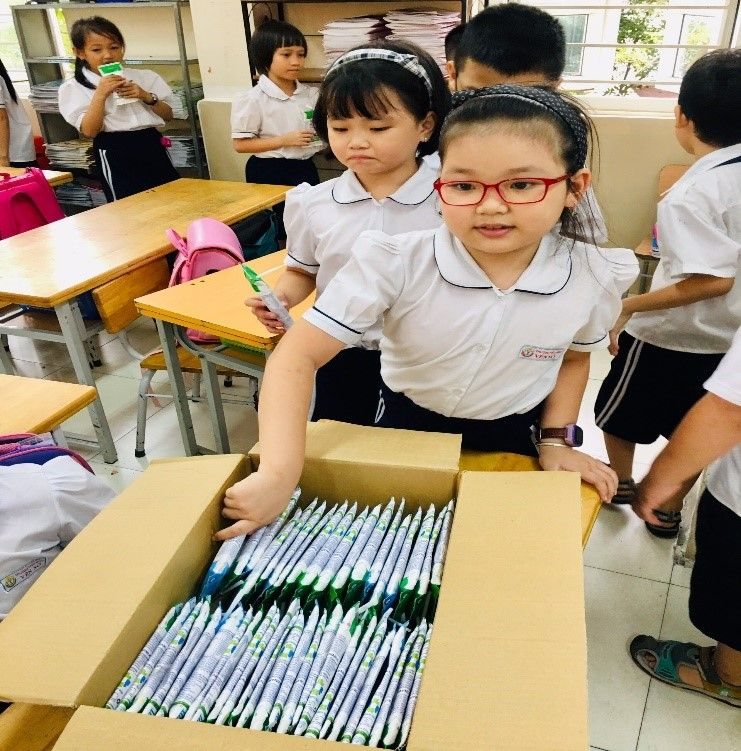

TIẾP TỤC THỰC HIỆN CHƯƠNG TRÌNH SỮA HỌC ĐƯỜNG TẠI TRƯỜNG TIỂU HỌC YÊN SỞ GIAI ĐOẠN 2021 - 2025
Như chúng ta đã biết, có rất nhiều yếu tố quyết định đến sự tăng trưởng chiều cao, thể chất của con người. Bao gồm các yếu tố gen, dinh dưỡng, chế độ luyện tập. Trong đó, một chế độ dinh dưỡng phù hợp là yếu tố tối quan trọng để thúc đẩy quá trình phát triển này, đặc biệt là với đối tượng trẻ nhỏ. Không chỉ sữa mà các sản phẩm từ sữa từ lâu đã được chứng minh là nguồn cung cấp canxi, đạm và các vitamin cần thiết khác một cách hiệu quả cho cơ thể. Đây cũng là nhóm thực phẩm dễ dung nạp giúp cơ thể dễ hấp thu và tăng trưởng.
Sữa là một trong tám nhóm thực phẩm được khuyến cáo nên sử dụng hàng ngày, có mặt trên tất cả tháp dinh dưỡng ở mọi lứa tuổi. Sữa quan trọng và dễ tiếp thu với giai đoạn tiền dậy thì và dậy thì. Sự phát triển khỏe mạnh về thể chất sẽ đem lại một trí tuệ minh mẫn, giúp các thế hệ trẻ Việt Nam có cơ hội phát huy hết các tiềm năng của mình và nâng cao khả năng cạnh tranh với các nguồn nhân lực của nước bạn.
Chính vì vậy, ngày 8/7/2016, Phó Thủ tướng Vũ Đức Đam ký Quyết định số 1340/QĐ-TTG phê duyệt Chương trình Quốc gia Sữa học đường cải thiện tình trạng dinh dưỡng, góp phần nâng cao tầm vóc và thể lực học sinh mẫu giáo, tiểu học. Chương trình quan tâm đặc biệt đến sự đầu tư vào "lứa tuổi vàng" từ 2 – 12 tuổi, bởi khoa học đã chứng minh ở lứa tuổi này, trẻ phát triển 86% thể chất, chiều cao, trí tuệ của một đời người.
Tại nhiều quốc gia trên thế giới như Nhật Bản, Thái Lan, Hàn Quốc, Anh, Mỹ… chương trình Sữa học đường được triển khai từ rất sớm, giúp phát triển thể lực, tầm vóc của nhiều thế hệ và tạo thói quen sử dụng sữa hàng ngày cho trẻ em. Trong khi đó, tại Việt Nam, chỉ khoảng 30% dân số biết và có thói quen dùng sữa, các sản phẩm từ sữa. Tỷ lệ trẻ em Việt Nam còi xương, suy dinh dưỡng, thiếu máu vẫn ở mức rất cao so với thế giới, trong đó tỷ lệ trẻ suy dinh dưỡng thể thấp còi lên tới 24,6%.Với tình trạng thể chất thấp kém như vậy, mỗi ngày chậm triển khai cho trẻ uống Sữa học đường là một ngày để lỡ cơ hội phát triển của trẻ.
Bởi vậy đề án Sữa học đường không chỉ là một chương trình có tính nhân văn cao mà còn là một chương trình có ý nghĩa thiết thực về lâu dài trong hành trình phát triển tầm vóc của thế hệ trẻ Việt Nam. Bên cạnh đó, chương trình còn giúp giảm bớt các gánh nặng về tài chính đối với gia đình và xã hội, đem lại cho các em sự bình đẳng trong việc tiếp cận các nguồn dinh dưỡng có lợi và giúp các em được hưởng đầy đủ, trọn vẹn các quyền lợi được nêu trong Công ước Quyền trẻ em, Luật Bảo vệ, chăm sóc và giáo dục trẻ em của Việt Nam và Quốc tế.
Nhận thức được ý nghĩa to lớn của Chương trình sữa học đường với học sinh, trong thời gian qua, tại trường tiểu học Yên Sở, tỉ lệ phụ huynh cho con đăng kí Sữa học đường gần 100% và đã được các cấp ghi nhận trong việc thực hiện chương trình nhân văn cải thiện tình trạng dinh dưỡng, góp phần nâng cao tầm vóc trẻ em mẫu giáo và học sinh tiểu học. Đây là một hoạt động thiết thực và có ý nghĩa quan trọng trong việc nâng cao sức khỏe, nâng cao tầm vóc Việt cho thế hệ trẻ Việt Nam.
Chương trình sữa học đường đã nhận được sự ủng hộ, tin tưởng từ cách thức triển khai cũng như về chất lượng sữa của Vinamilk được sử dụng trong trường học, hi vọng đề án sữa học đường sẽ được triển khai tiếp tục trong giai đoạn năm 2021-2025. Rất mong nhận được sự quan tâm, ủng hộ của các bậc phụ huynh trường tiểu học Yên Sở tới chương trình sữa học đường giai đoạn tiếp theo.

Sữa học đường đã trở thành người bạn đồng hành không thể thiểu với mỗi bạn học sinh trường tiểu học Yên Sở.

